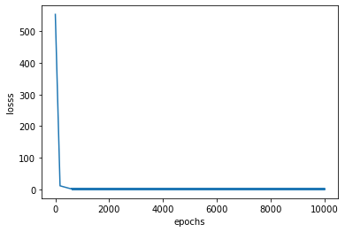

<!DOCTYPE html>
<html lang=en>
<head>
    <!-- so meta -->
    <meta charset="utf-8">
    <meta http-equiv="X-UA-Compatible" content="IE=edge">
    <meta name="HandheldFriendly" content="True">
    <meta name="viewport" content="width=device-width, initial-scale=1, maximum-scale=5" />
    <meta name="description" content="1import tensorflow as tf  Gradient : tf.GradientTape123tf.GradientTape(    persistent&#x3D;False, watch_accessed_variables&#x3D;True)   1234x &#x3D; tf.constant(2.0)with tf.GradientTape() as tape:    tape.">
<meta property="og:type" content="article">
<meta property="og:title" content="Tensorflow Basics : Part 2">
<meta property="og:url" content="https://zarif98sjs.github.io/mindcraft/TF_Basics_P2/index.html">
<meta property="og:site_name" content="MindCraft">
<meta property="og:description" content="1import tensorflow as tf  Gradient : tf.GradientTape123tf.GradientTape(    persistent&#x3D;False, watch_accessed_variables&#x3D;True)   1234x &#x3D; tf.constant(2.0)with tf.GradientTape() as tape:    tape.">
<meta property="og:locale" content="en_US">
<meta property="og:image" content="https://zarif98sjs.github.io/mindcraft/TF_Basics_P2/output_20_1.png">
<meta property="article:published_time" content="2020-06-27T00:00:00.000Z">
<meta property="article:modified_time" content="2021-04-27T08:27:54.346Z">
<meta property="article:author" content="Md. Zarif Ul Alam">
<meta property="article:tag" content="Algo, DS, Software &amp; What Not!">
<meta property="article:tag" content="Learning Notes">
<meta name="twitter:card" content="summary">
<meta name="twitter:image" content="https://zarif98sjs.github.io/mindcraft/TF_Basics_P2/output_20_1.png">
    
    
      
        
          <link rel="shortcut icon" href="/mindcraft/images/favicon.ico">
        
      
      
        
          <link rel="icon" type="image/png" href="/mindcraft/images/favicon-192x192.png" sizes="192x192">
        
      
      
        
          <link rel="apple-touch-icon" sizes="180x180" href="/mindcraft/images/apple-touch-icon.png">
        
      
    
    <!-- title -->
    <title>Tensorflow Basics : Part 2</title>
    <!-- styles -->
    
<link rel="stylesheet" href="/mindcraft/css/style.css">

    <!-- persian styles -->
    
    <!-- rss -->
    
    
	<!-- mathjax -->
	
		<script type="text/x-mathjax-config">
		  MathJax.Hub.Config({
			tex2jax: {
			  skipTags: ['script', 'noscript', 'style', 'textarea', 'pre'],
			  inlineMath: [['$','$']]
			}
		  });
		</script>
		<script src='https://cdnjs.cloudflare.com/ajax/libs/mathjax/2.7.5/latest.js?config=TeX-MML-AM_CHTML' async></script>
	
<meta name="generator" content="Hexo 5.4.0"></head>

<body class="max-width mx-auto px3 ltr">
    
      <div id="header-post">
  <a id="menu-icon" href="#" aria-label="Menu"><i class="fas fa-bars fa-lg"></i></a>
  <a id="menu-icon-tablet" href="#" aria-label="Menu"><i class="fas fa-bars fa-lg"></i></a>
  <a id="top-icon-tablet" href="#" "Top" onclick="$('html, body').animate({ scrollTop: 0 }, 'fast');" style="display:none;"><i class="fas fa-chevron-up fa-lg"></i></a>
  <span id="menu">
    <span id="nav">
      <ul>
         
          <li><a href="/mindcraft/">Home</a></li>
         
          <li><a href="/mindcraft/archives/">Archive</a></li>
         
          <li><a href="https://zarif98sjs.github.io/">About Me</a></li>
        
      </ul>
    </span>
    <br/>
    <span id="actions">
      <ul>
        
        <li><a class="icon" aria-label="Previous post " href="/mindcraft/BinaryClassification/"><i class="fas fa-chevron-left" aria-hidden="true" onmouseover="$('#i-prev').toggle();" onmouseout="$('#i-prev').toggle();"></i></a></li>
        
        
        <li><a class="icon" aria-label="Next post " href="/mindcraft/TF_Basics_P1/"><i class="fas fa-chevron-right" aria-hidden="true" onmouseover="$('#i-next').toggle();" onmouseout="$('#i-next').toggle();"></i></a></li>
        
        <li><a class="icon" aria-label="Back to top " href="#" onclick="$('html, body').animate({ scrollTop: 0 }, 'fast');"><i class="fas fa-chevron-up" aria-hidden="true" onmouseover="$('#i-top').toggle();" onmouseout="$('#i-top').toggle();"></i></a></li>
        <li><a class="icon" aria-label="Share post " href="#"><i class="fas fa-share-alt" aria-hidden="true" onmouseover="$('#i-share').toggle();" onmouseout="$('#i-share').toggle();" onclick="$('#share').toggle();return false;"></i></a></li>
      </ul>
      <span id="i-prev" class="info" style="display:none;">Previous post</span>
      <span id="i-next" class="info" style="display:none;">Next post</span>
      <span id="i-top" class="info" style="display:none;">Back to top</span>
      <span id="i-share" class="info" style="display:none;">Share post</span>
    </span>
    <br/>
    <div id="share" style="display: none">
      <ul>
  <li><a class="icon" target="_blank" rel="noopener" href="http://www.facebook.com/sharer.php?u=https://zarif98sjs.github.io/mindcraft/TF_Basics_P2/"><i class="fab fa-facebook " aria-hidden="true"></i></a></li>
  <li><a class="icon" target="_blank" rel="noopener" href="https://twitter.com/share?url=https://zarif98sjs.github.io/mindcraft/TF_Basics_P2/&text=Tensorflow Basics : Part 2"><i class="fab fa-twitter " aria-hidden="true"></i></a></li>
  <li><a class="icon" target="_blank" rel="noopener" href="http://www.linkedin.com/shareArticle?url=https://zarif98sjs.github.io/mindcraft/TF_Basics_P2/&title=Tensorflow Basics : Part 2"><i class="fab fa-linkedin " aria-hidden="true"></i></a></li>
  <li><a class="icon" target="_blank" rel="noopener" href="https://pinterest.com/pin/create/bookmarklet/?url=https://zarif98sjs.github.io/mindcraft/TF_Basics_P2/&is_video=false&description=Tensorflow Basics : Part 2"><i class="fab fa-pinterest " aria-hidden="true"></i></a></li>
  <li><a class="icon" href="mailto:?subject=Tensorflow Basics : Part 2&body=Check out this article: https://zarif98sjs.github.io/mindcraft/TF_Basics_P2/"><i class="fas fa-envelope " aria-hidden="true"></i></a></li>
  <li><a class="icon" target="_blank" rel="noopener" href="https://getpocket.com/save?url=https://zarif98sjs.github.io/mindcraft/TF_Basics_P2/&title=Tensorflow Basics : Part 2"><i class="fab fa-get-pocket " aria-hidden="true"></i></a></li>
  <li><a class="icon" target="_blank" rel="noopener" href="http://reddit.com/submit?url=https://zarif98sjs.github.io/mindcraft/TF_Basics_P2/&title=Tensorflow Basics : Part 2"><i class="fab fa-reddit " aria-hidden="true"></i></a></li>
  <li><a class="icon" target="_blank" rel="noopener" href="http://www.stumbleupon.com/submit?url=https://zarif98sjs.github.io/mindcraft/TF_Basics_P2/&title=Tensorflow Basics : Part 2"><i class="fab fa-stumbleupon " aria-hidden="true"></i></a></li>
  <li><a class="icon" target="_blank" rel="noopener" href="http://digg.com/submit?url=https://zarif98sjs.github.io/mindcraft/TF_Basics_P2/&title=Tensorflow Basics : Part 2"><i class="fab fa-digg " aria-hidden="true"></i></a></li>
  <li><a class="icon" target="_blank" rel="noopener" href="http://www.tumblr.com/share/link?url=https://zarif98sjs.github.io/mindcraft/TF_Basics_P2/&name=Tensorflow Basics : Part 2&description="><i class="fab fa-tumblr " aria-hidden="true"></i></a></li>
  <li><a class="icon" target="_blank" rel="noopener" href="https://news.ycombinator.com/submitlink?u=https://zarif98sjs.github.io/mindcraft/TF_Basics_P2/&t=Tensorflow Basics : Part 2"><i class="fab fa-hacker-news " aria-hidden="true"></i></a></li>
</ul>

    </div>
    <div id="toc">
      <ol class="toc"><li class="toc-item toc-level-1"><a class="toc-link" href="#Gradient-tf-GradientTape"><span class="toc-number">1.</span> <span class="toc-text">Gradient : tf.GradientTape</span></a><ol class="toc-child"><li class="toc-item toc-level-2"><a class="toc-link" href="#Usage-in-transfer-learning"><span class="toc-number">1.1.</span> <span class="toc-text">Usage : in transfer learning</span></a></li></ol></li><li class="toc-item toc-level-1"><a class="toc-link" href="#Linear-Regression-using-GradientTape"><span class="toc-number">2.</span> <span class="toc-text">Linear Regression using GradientTape</span></a></li><li class="toc-item toc-level-1"><a class="toc-link" href="#Neural-Networks-with-GradientTape"><span class="toc-number">3.</span> <span class="toc-text">Neural Networks with GradientTape</span></a></li></ol>
    </div>
  </span>
</div>

    
    <div class="content index py4">
        
        <article class="post" itemscope itemtype="http://schema.org/BlogPosting">
  <header>
    
    <h1 class="posttitle" itemprop="name headline">
        Tensorflow Basics : Part 2
    </h1>


    <div class="meta">
      <span class="author" itemprop="author" itemscope itemtype="http://schema.org/Person">
        <span itemprop="name">Md. Zarif Ul Alam</span>
      </span>
      
    <div class="postdate">
      
        <time datetime="2020-06-27T00:00:00.000Z" itemprop="datePublished">2020-06-27</time>
        
      
    </div>


      
    <div class="article-category">
        <i class="fas fa-archive"></i>
        <a class="category-link" href="/mindcraft/categories/Machine-Learning/">Machine Learning</a> › <a class="category-link" href="/mindcraft/categories/Machine-Learning/Tensorflow/">Tensorflow</a>
    </div>


      
    <div class="article-tag">
        <i class="fas fa-tag"></i>
        <a class="tag-link-link" href="/mindcraft/tags/Algo-DS-Software-What-Not/" rel="tag">Algo, DS, Software & What Not!</a>, <a class="tag-link-link" href="/mindcraft/tags/Learning-Notes/" rel="tag">Learning Notes</a>
    </div>


    </div>
  </header>
  

  <div class="content" itemprop="articleBody">
    <figure class="highlight python"><table><tr><td class="gutter"><pre><span class="line">1</span><br></pre></td><td class="code"><pre><span class="line"><span class="keyword">import</span> tensorflow <span class="keyword">as</span> tf</span><br></pre></td></tr></table></figure>

<h1 id="Gradient-tf-GradientTape"><a href="#Gradient-tf-GradientTape" class="headerlink" title="Gradient : tf.GradientTape"></a>Gradient : <code>tf.GradientTape</code></h1><figure class="highlight plain"><table><tr><td class="gutter"><pre><span class="line">1</span><br><span class="line">2</span><br><span class="line">3</span><br></pre></td><td class="code"><pre><span class="line">tf.GradientTape(</span><br><span class="line">    persistent&#x3D;False, watch_accessed_variables&#x3D;True</span><br><span class="line">)</span><br></pre></td></tr></table></figure>


<figure class="highlight python"><table><tr><td class="gutter"><pre><span class="line">1</span><br><span class="line">2</span><br><span class="line">3</span><br><span class="line">4</span><br></pre></td><td class="code"><pre><span class="line">x = tf.constant(<span class="number">2.0</span>)</span><br><span class="line"><span class="keyword">with</span> tf.GradientTape() <span class="keyword">as</span> tape:</span><br><span class="line">    tape.watch(x)</span><br><span class="line">    y = x**<span class="number">2</span> + <span class="number">2</span>*x + <span class="number">5</span></span><br></pre></td></tr></table></figure>


<figure class="highlight python"><table><tr><td class="gutter"><pre><span class="line">1</span><br><span class="line">2</span><br></pre></td><td class="code"><pre><span class="line">gradient = tape.gradient(y,x).numpy()</span><br><span class="line"><span class="built_in">print</span>(gradient)</span><br></pre></td></tr></table></figure>

<pre><code>6.0
</code></pre>
<p><strong>if tensor is of variable type , no need to add watch</strong></p>
<figure class="highlight python"><table><tr><td class="gutter"><pre><span class="line">1</span><br><span class="line">2</span><br><span class="line">3</span><br><span class="line">4</span><br><span class="line">5</span><br></pre></td><td class="code"><pre><span class="line">x = tf.Variable(<span class="number">2.0</span>)</span><br><span class="line"><span class="keyword">with</span> tf.GradientTape() <span class="keyword">as</span> tape:</span><br><span class="line">    y = x**<span class="number">2</span> + <span class="number">2</span>*x + <span class="number">5</span></span><br><span class="line">    gradient = tape.gradient(y, x).numpy()</span><br><span class="line">    <span class="built_in">print</span>(gradient)</span><br></pre></td></tr></table></figure>

<pre><code>6.0
</code></pre>
<p><strong>gradient tape can be used for multiple variable simultaneously</strong></p>
<figure class="highlight python"><table><tr><td class="gutter"><pre><span class="line">1</span><br><span class="line">2</span><br><span class="line">3</span><br><span class="line">4</span><br><span class="line">5</span><br><span class="line">6</span><br><span class="line">7</span><br><span class="line">8</span><br><span class="line">9</span><br><span class="line">10</span><br><span class="line">11</span><br><span class="line">12</span><br></pre></td><td class="code"><pre><span class="line"><span class="comment"># (x, y) = (2.0, 5.0)</span></span><br><span class="line"><span class="comment"># for x = 2, 2x + 2 = 2*2 + 2 = 6</span></span><br><span class="line"><span class="comment"># for y = 5, 2y + 2 = 5*2 + 2 = 12</span></span><br><span class="line"></span><br><span class="line">x = tf.Variable(<span class="number">2.0</span>)</span><br><span class="line">y = tf.Variable(<span class="number">5.0</span>)</span><br><span class="line"><span class="keyword">with</span> tf.GradientTape() <span class="keyword">as</span> tape:</span><br><span class="line">    eq_x = x**<span class="number">2</span> + <span class="number">2</span>*x + <span class="number">5</span></span><br><span class="line">    eq_y = y**<span class="number">2</span> + <span class="number">2</span>*y + <span class="number">5</span></span><br><span class="line">    greds = tape.gradient([eq_x, eq_y], [x, y])</span><br><span class="line">    <span class="keyword">for</span> gred <span class="keyword">in</span> greds:</span><br><span class="line">        <span class="built_in">print</span>(<span class="string">&#x27;Gradient is:&#x27;</span>, gred.numpy())</span><br></pre></td></tr></table></figure>

<pre><code>Gradient is: 6.0
Gradient is: 12.0
</code></pre>
<p><strong>higher order derivatives can also be computed with nested loops</strong></p>
<figure class="highlight python"><table><tr><td class="gutter"><pre><span class="line">1</span><br><span class="line">2</span><br><span class="line">3</span><br><span class="line">4</span><br><span class="line">5</span><br><span class="line">6</span><br><span class="line">7</span><br><span class="line">8</span><br><span class="line">9</span><br></pre></td><td class="code"><pre><span class="line">x = tf.Variable(<span class="number">3.0</span>)</span><br><span class="line"><span class="keyword">with</span> tf.GradientTape() <span class="keyword">as</span> g:</span><br><span class="line">  <span class="keyword">with</span> tf.GradientTape() <span class="keyword">as</span> gg:</span><br><span class="line">    y = x * x * x</span><br><span class="line">  dy_dx = gg.gradient(y, x)</span><br><span class="line">d2y_dx2 = g.gradient(dy_dx, x)</span><br><span class="line"></span><br><span class="line"><span class="built_in">print</span>(dy_dx.numpy())</span><br><span class="line"><span class="built_in">print</span>(d2y_dx2.numpy())</span><br></pre></td></tr></table></figure>

<pre><code>27.0
18.0
</code></pre>
<p><strong>we can set set the default watch condition to false , by that we can compute<br>gradient for only the variables we want</strong></p>
<h2 id="Usage-in-transfer-learning"><a href="#Usage-in-transfer-learning" class="headerlink" title="Usage : in transfer learning"></a><strong>Usage : in transfer learning</strong></h2><figure class="highlight python"><table><tr><td class="gutter"><pre><span class="line">1</span><br><span class="line">2</span><br><span class="line">3</span><br><span class="line">4</span><br><span class="line">5</span><br><span class="line">6</span><br></pre></td><td class="code"><pre><span class="line"><span class="comment">## code same as before , but nothing is computed this time</span></span><br><span class="line">x = tf.Variable(<span class="number">2.0</span>)</span><br><span class="line"><span class="keyword">with</span> tf.GradientTape(watch_accessed_variables=<span class="literal">False</span>) <span class="keyword">as</span> tape:</span><br><span class="line">    y = x**<span class="number">2</span> + <span class="number">2</span>*x + <span class="number">5</span></span><br><span class="line">    gradient = tape.gradient(y, x)</span><br><span class="line">    <span class="built_in">print</span>(gradient)</span><br></pre></td></tr></table></figure>

<pre><code>None
</code></pre>
<p><strong>gradient tapes are by default not presistent</strong></p>
<p><strong>the resources held by a GradientTape are released as soon as GradientTape.gradient() method is called</strong></p>
<figure class="highlight python"><table><tr><td class="gutter"><pre><span class="line">1</span><br><span class="line">2</span><br><span class="line">3</span><br><span class="line">4</span><br><span class="line">5</span><br><span class="line">6</span><br><span class="line">7</span><br><span class="line">8</span><br><span class="line">9</span><br></pre></td><td class="code"><pre><span class="line">a = tf.Variable(<span class="number">6.0</span>, trainable=<span class="literal">True</span>)</span><br><span class="line">b = tf.Variable(<span class="number">2.0</span>, trainable=<span class="literal">True</span>)</span><br><span class="line"><span class="keyword">with</span> tf.GradientTape() <span class="keyword">as</span> tape:</span><br><span class="line">    y1 = a * a * a</span><br><span class="line">    y2 = b ** <span class="number">3</span> <span class="comment"># will give error</span></span><br><span class="line"></span><br><span class="line"><span class="built_in">print</span>(tape.gradient(y1, a).numpy())</span><br><span class="line"><span class="built_in">print</span>(tape.gradient(y2, b).numpy())</span><br><span class="line"></span><br></pre></td></tr></table></figure>

<pre><code>108.0


---------------------------------------------------------------------------

RuntimeError                              Traceback (most recent call last)

&lt;ipython-input-19-dfc355cfc885&gt; in &lt;module&gt;
      6 
      7 print(tape.gradient(y1, a).numpy())
----&gt; 8 print(tape.gradient(y2, b).numpy())
      9 
     10 


D:\Anaconda3\envs\tf_env\lib\site-packages\tensorflow_core\python\eager\backprop.py in gradient(self, target, sources, output_gradients, unconnected_gradients)
    978     &quot;&quot;&quot;
    979     if self._tape is None:
--&gt; 980       raise RuntimeError(&quot;GradientTape.gradient can only be called once on &quot;
    981                          &quot;non-persistent tapes.&quot;)
    982     if self._recording:


RuntimeError: GradientTape.gradient can only be called once on non-persistent tapes.
</code></pre>
<figure class="highlight python"><table><tr><td class="gutter"><pre><span class="line">1</span><br><span class="line">2</span><br><span class="line">3</span><br><span class="line">4</span><br><span class="line">5</span><br><span class="line">6</span><br><span class="line">7</span><br><span class="line">8</span><br></pre></td><td class="code"><pre><span class="line">a = tf.Variable(<span class="number">6.0</span>)</span><br><span class="line">b = tf.Variable(<span class="number">2.0</span>)</span><br><span class="line"><span class="keyword">with</span> tf.GradientTape(persistent=<span class="literal">True</span>) <span class="keyword">as</span> tape:</span><br><span class="line">    y1 = a * a * a</span><br><span class="line">    y2 = b ** <span class="number">3</span></span><br><span class="line"></span><br><span class="line"><span class="built_in">print</span>(tape.gradient(y1, a).numpy())</span><br><span class="line"><span class="built_in">print</span>(tape.gradient(y2, b).numpy())</span><br></pre></td></tr></table></figure>

<pre><code>108.0
12.0
</code></pre>
<p><strong><code>tape.stop_recording()</code></strong></p>
<p><strong>temporarily pauses the tapes recording, leading to greater computation speed</strong></p>
<p><strong>in long functions, it is more readable to use stop_recording blocks multiple times to calculate gradients in the middle of a function, than to calculate all the gradients at the end of a function</strong></p>
<figure class="highlight python"><table><tr><td class="gutter"><pre><span class="line">1</span><br><span class="line">2</span><br><span class="line">3</span><br><span class="line">4</span><br><span class="line">5</span><br><span class="line">6</span><br></pre></td><td class="code"><pre><span class="line">x = tf.Variable(<span class="number">3.0</span>, trainable=<span class="literal">True</span>)</span><br><span class="line"><span class="keyword">with</span> tf.GradientTape() <span class="keyword">as</span> tape:</span><br><span class="line">    y = x**<span class="number">3</span></span><br><span class="line">    <span class="keyword">with</span> tape.stop_recording():</span><br><span class="line">        <span class="built_in">print</span>(tape.gradient(y, x).numpy()) <span class="comment"># -&gt; 27.0</span></span><br><span class="line"></span><br></pre></td></tr></table></figure>

<pre><code>27.0
</code></pre>
<figure class="highlight python"><table><tr><td class="gutter"><pre><span class="line">1</span><br><span class="line">2</span><br><span class="line">3</span><br><span class="line">4</span><br><span class="line">5</span><br><span class="line">6</span><br><span class="line">7</span><br><span class="line">8</span><br><span class="line">9</span><br><span class="line">10</span><br><span class="line">11</span><br></pre></td><td class="code"><pre><span class="line">a = tf.Variable(<span class="number">6.0</span>, trainable=<span class="literal">True</span>)</span><br><span class="line">b = tf.Variable(<span class="number">2.0</span>, trainable=<span class="literal">True</span>)</span><br><span class="line"><span class="keyword">with</span> tf.GradientTape(persistent=<span class="literal">True</span>) <span class="keyword">as</span> tape:</span><br><span class="line">    y1 = a ** <span class="number">2</span></span><br><span class="line">    <span class="keyword">with</span> tape.stop_recording():</span><br><span class="line">        <span class="built_in">print</span>(tape.gradient(y1, a).numpy())</span><br><span class="line"></span><br><span class="line">    y2 = b ** <span class="number">3</span></span><br><span class="line">    <span class="keyword">with</span> tape.stop_recording():</span><br><span class="line">        <span class="built_in">print</span>(tape.gradient(y2, b).numpy())</span><br><span class="line"></span><br></pre></td></tr></table></figure>

<pre><code>12.0
12.0
</code></pre>
<h1 id="Linear-Regression-using-GradientTape"><a href="#Linear-Regression-using-GradientTape" class="headerlink" title="Linear Regression using GradientTape"></a>Linear Regression using GradientTape</h1><ul>
<li><strong>prepare train data</strong></li>
<li><strong>define train variables</strong></li>
<li><strong>define step/update function</strong><ul>
<li><strong>define loss function</strong></li>
</ul>
</li>
<li><strong>train</strong></li>
</ul>
<figure class="highlight python"><table><tr><td class="gutter"><pre><span class="line">1</span><br><span class="line">2</span><br><span class="line">3</span><br><span class="line">4</span><br><span class="line">5</span><br><span class="line">6</span><br><span class="line">7</span><br><span class="line">8</span><br><span class="line">9</span><br><span class="line">10</span><br><span class="line">11</span><br><span class="line">12</span><br><span class="line">13</span><br><span class="line">14</span><br><span class="line">15</span><br><span class="line">16</span><br><span class="line">17</span><br><span class="line">18</span><br><span class="line">19</span><br><span class="line">20</span><br><span class="line">21</span><br><span class="line">22</span><br><span class="line">23</span><br><span class="line">24</span><br><span class="line">25</span><br><span class="line">26</span><br><span class="line">27</span><br><span class="line">28</span><br><span class="line">29</span><br><span class="line">30</span><br><span class="line">31</span><br><span class="line">32</span><br><span class="line">33</span><br><span class="line">34</span><br><span class="line">35</span><br><span class="line">36</span><br><span class="line">37</span><br><span class="line">38</span><br><span class="line">39</span><br><span class="line">40</span><br><span class="line">41</span><br><span class="line">42</span><br><span class="line">43</span><br><span class="line">44</span><br><span class="line">45</span><br><span class="line">46</span><br><span class="line">47</span><br><span class="line">48</span><br><span class="line">49</span><br></pre></td><td class="code"><pre><span class="line"><span class="keyword">import</span> random</span><br><span class="line"><span class="keyword">import</span> numpy <span class="keyword">as</span> np</span><br><span class="line"></span><br><span class="line"><span class="comment"># Training data</span></span><br><span class="line">x_train = np.asarray([<span class="number">0</span>, <span class="number">1</span>, <span class="number">2</span>, <span class="number">3</span>, <span class="number">4</span>, <span class="number">5</span>, <span class="number">6</span>, <span class="number">7</span>, <span class="number">8</span>, <span class="number">9</span>, <span class="number">10</span>])</span><br><span class="line">y_train = np.asarray([i*<span class="number">10</span>+<span class="number">5</span> <span class="keyword">for</span> i <span class="keyword">in</span> x_train]) <span class="comment"># y = 10x+5</span></span><br><span class="line"></span><br><span class="line"><span class="comment"># Loss function</span></span><br><span class="line"><span class="function"><span class="keyword">def</span> <span class="title">loss</span>(<span class="params">real_y, pred_y</span>):</span></span><br><span class="line">    <span class="keyword">return</span> tf.<span class="built_in">abs</span>(real_y - pred_y)</span><br><span class="line"></span><br><span class="line">losses = []</span><br><span class="line"></span><br><span class="line"><span class="comment"># Trainable variables</span></span><br><span class="line">a = tf.Variable(random.random(), trainable=<span class="literal">True</span>)</span><br><span class="line">b = tf.Variable(random.random(), trainable=<span class="literal">True</span>)</span><br><span class="line"></span><br><span class="line"><span class="comment"># Step function</span></span><br><span class="line"><span class="function"><span class="keyword">def</span> <span class="title">step</span>(<span class="params">real_x, real_y,e</span>):</span></span><br><span class="line">    <span class="keyword">with</span> tf.GradientTape(persistent=<span class="literal">True</span>) <span class="keyword">as</span> tape:</span><br><span class="line">        <span class="comment"># Make prediction</span></span><br><span class="line">        pred_y = a * real_x + b</span><br><span class="line">        <span class="comment"># Calculate loss</span></span><br><span class="line">        reg_loss = loss(real_y, pred_y)</span><br><span class="line">        losses.append(tf.reduce_sum(reg_loss))</span><br><span class="line"></span><br><span class="line">    <span class="comment"># Calculate gradients (for both of the variables)</span></span><br><span class="line">    a_gradients, b_gradients = tape.gradient(reg_loss, [a, b])</span><br><span class="line"></span><br><span class="line">    <span class="comment"># Update variables</span></span><br><span class="line">    learning_rate = <span class="number">0.001</span></span><br><span class="line">    a.assign_sub(a_gradients * learning_rate)</span><br><span class="line">    b.assign_sub(b_gradients * learning_rate)</span><br><span class="line">    <span class="comment"># print(f&#x27;epochs=&#123;e&#125; y ≈ &#123;a.numpy():.3f&#125;x + &#123;b.numpy():.3f&#125;&#x27;)</span></span><br><span class="line"></span><br><span class="line"><span class="comment"># Training loop</span></span><br><span class="line">EPOCHS = <span class="number">10000</span></span><br><span class="line"><span class="keyword">for</span> e <span class="keyword">in</span> <span class="built_in">range</span>(EPOCHS):</span><br><span class="line">    step(x_train, y_train,e)</span><br><span class="line"></span><br><span class="line"><span class="built_in">print</span>(<span class="string">f&#x27;y ≈ <span class="subst">&#123;a.numpy()&#125;</span>x + <span class="subst">&#123;b.numpy()&#125;</span>&#x27;</span>)</span><br><span class="line"></span><br><span class="line"><span class="keyword">from</span> matplotlib <span class="keyword">import</span> pyplot <span class="keyword">as</span> plt</span><br><span class="line"></span><br><span class="line">ep = <span class="built_in">list</span>(<span class="built_in">range</span>(EPOCHS))</span><br><span class="line">plt.plot(ep, losses)</span><br><span class="line">plt.xlabel(<span class="string">&#x27;epochs&#x27;</span>)</span><br><span class="line">plt.ylabel(<span class="string">&#x27;losss&#x27;</span>)</span><br><span class="line">plt.show()</span><br></pre></td></tr></table></figure>

<pre><code>y ≈ 10.053751945495605x + 5.000401973724365
</code></pre>
<p></p>
<h1 id="Neural-Networks-with-GradientTape"><a href="#Neural-Networks-with-GradientTape" class="headerlink" title="Neural Networks with GradientTape"></a>Neural Networks with GradientTape</h1><ul>
<li><strong>prepare train data</strong></li>
<li><strong>define hyperparameters</strong></li>
<li><strong>define neural network model</strong></li>
<li><strong>define step/update function</strong><ul>
<li><strong>define loss function</strong></li>
</ul>
</li>
<li><strong>train</strong></li>
</ul>
<figure class="highlight python"><table><tr><td class="gutter"><pre><span class="line">1</span><br><span class="line">2</span><br><span class="line">3</span><br><span class="line">4</span><br><span class="line">5</span><br><span class="line">6</span><br><span class="line">7</span><br><span class="line">8</span><br><span class="line">9</span><br><span class="line">10</span><br><span class="line">11</span><br><span class="line">12</span><br><span class="line">13</span><br><span class="line">14</span><br><span class="line">15</span><br><span class="line">16</span><br><span class="line">17</span><br><span class="line">18</span><br><span class="line">19</span><br><span class="line">20</span><br><span class="line">21</span><br><span class="line">22</span><br><span class="line">23</span><br><span class="line">24</span><br><span class="line">25</span><br><span class="line">26</span><br><span class="line">27</span><br><span class="line">28</span><br><span class="line">29</span><br><span class="line">30</span><br><span class="line">31</span><br><span class="line">32</span><br><span class="line">33</span><br><span class="line">34</span><br><span class="line">35</span><br><span class="line">36</span><br><span class="line">37</span><br><span class="line">38</span><br><span class="line">39</span><br><span class="line">40</span><br><span class="line">41</span><br><span class="line">42</span><br><span class="line">43</span><br><span class="line">44</span><br><span class="line">45</span><br><span class="line">46</span><br><span class="line">47</span><br><span class="line">48</span><br><span class="line">49</span><br><span class="line">50</span><br><span class="line">51</span><br><span class="line">52</span><br><span class="line">53</span><br><span class="line">54</span><br><span class="line">55</span><br><span class="line">56</span><br><span class="line">57</span><br><span class="line">58</span><br><span class="line">59</span><br><span class="line">60</span><br><span class="line">61</span><br><span class="line">62</span><br></pre></td><td class="code"><pre><span class="line"><span class="comment"># 2.2 - Classifying MNIST</span></span><br><span class="line"><span class="keyword">from</span> tensorflow.keras.layers <span class="keyword">import</span> Conv2D, Flatten, Dense, Dropout, MaxPooling2D</span><br><span class="line"><span class="keyword">from</span> tensorflow.keras.models <span class="keyword">import</span> Sequential</span><br><span class="line"><span class="keyword">from</span> tensorflow.keras.initializers <span class="keyword">import</span> RandomNormal</span><br><span class="line"><span class="keyword">from</span> tensorflow.keras.datasets <span class="keyword">import</span> mnist</span><br><span class="line"><span class="keyword">from</span> tensorflow.keras.optimizers <span class="keyword">import</span> Adam</span><br><span class="line"><span class="keyword">import</span> matplotlib.pyplot <span class="keyword">as</span> plt</span><br><span class="line"><span class="keyword">import</span> random</span><br><span class="line"><span class="keyword">import</span> math</span><br><span class="line">%matplotlib inline</span><br><span class="line"></span><br><span class="line"><span class="comment"># Load and pre-process training data</span></span><br><span class="line">(x_train, y_train), (x_test, y_test) = mnist.load_data()</span><br><span class="line">x_train = (x_train / <span class="number">255</span>).reshape((-<span class="number">1</span>, <span class="number">28</span>, <span class="number">28</span>, <span class="number">1</span>))</span><br><span class="line">y_train = tf.keras.utils.to_categorical(y_train, <span class="number">10</span>)</span><br><span class="line">x_test = (x_test / <span class="number">255</span>).reshape((-<span class="number">1</span>, <span class="number">28</span>, <span class="number">28</span>, <span class="number">1</span>))</span><br><span class="line">y_test = tf.keras.utils.to_categorical(y_test, <span class="number">10</span>)</span><br><span class="line"></span><br><span class="line"><span class="comment"># Hyperparameters</span></span><br><span class="line">batch_size = <span class="number">128</span></span><br><span class="line">epochs = <span class="number">25</span></span><br><span class="line">optimizer = Adam(lr=<span class="number">0.001</span>)</span><br><span class="line">weight_init = RandomNormal()</span><br><span class="line"></span><br><span class="line"><span class="comment"># Build model</span></span><br><span class="line">model = Sequential()</span><br><span class="line">model.add(Conv2D(<span class="number">32</span>, kernel_size=(<span class="number">3</span>, <span class="number">3</span>), activation=<span class="string">&#x27;relu&#x27;</span>, kernel_initializer=weight_init, input_shape=(<span class="number">28</span>, <span class="number">28</span>, <span class="number">1</span>)))</span><br><span class="line">model.add(Conv2D(<span class="number">64</span>, (<span class="number">3</span>, <span class="number">3</span>), activation=<span class="string">&#x27;relu&#x27;</span>, kernel_initializer=weight_init))</span><br><span class="line">model.add(MaxPooling2D(pool_size=(<span class="number">2</span>, <span class="number">2</span>)))</span><br><span class="line">model.add(Dropout(<span class="number">0.25</span>))</span><br><span class="line">model.add(Flatten())</span><br><span class="line">model.add(Dense(<span class="number">128</span>, activation=<span class="string">&#x27;relu&#x27;</span>, kernel_initializer=weight_init))</span><br><span class="line">model.add(Dropout(<span class="number">0.5</span>))</span><br><span class="line">model.add(Dense(<span class="number">10</span>, activation=<span class="string">&#x27;softmax&#x27;</span>, kernel_initializer=weight_init))</span><br><span class="line"></span><br><span class="line"><span class="comment"># Step function</span></span><br><span class="line"><span class="function"><span class="keyword">def</span> <span class="title">step</span>(<span class="params">real_x, real_y</span>):</span></span><br><span class="line">    <span class="keyword">with</span> tf.GradientTape() <span class="keyword">as</span> tape:</span><br><span class="line">        <span class="comment"># Make prediction</span></span><br><span class="line">        pred_y = model(real_x.reshape((-<span class="number">1</span>, <span class="number">28</span>, <span class="number">28</span>, <span class="number">1</span>)))</span><br><span class="line">        <span class="comment"># Calculate loss</span></span><br><span class="line">        model_loss = tf.keras.losses.categorical_crossentropy(real_y, pred_y)</span><br><span class="line"></span><br><span class="line">    <span class="comment"># Calculate gradients</span></span><br><span class="line">    model_gradients = tape.gradient(model_loss, model.trainable_variables)</span><br><span class="line">    <span class="comment"># Update model</span></span><br><span class="line">    optimizer.apply_gradients(<span class="built_in">zip</span>(model_gradients, model.trainable_variables))</span><br><span class="line"></span><br><span class="line"></span><br><span class="line"><span class="comment"># Training loop</span></span><br><span class="line">bat_per_epoch = math.floor(<span class="built_in">len</span>(x_train) / batch_size)</span><br><span class="line"><span class="keyword">for</span> epoch <span class="keyword">in</span> <span class="built_in">range</span>(epochs):</span><br><span class="line">    <span class="built_in">print</span>(<span class="string">&#x27;=&#x27;</span>, end=<span class="string">&#x27;&#x27;</span>)</span><br><span class="line">    <span class="keyword">for</span> i <span class="keyword">in</span> <span class="built_in">range</span>(bat_per_epoch):</span><br><span class="line">        n = i*batch_size</span><br><span class="line">        step(x_train[n:n+batch_size], y_train[n:n+batch_size])</span><br><span class="line"></span><br><span class="line"></span><br><span class="line"><span class="comment"># Calculate accuracy</span></span><br><span class="line">model.<span class="built_in">compile</span>(optimizer=optimizer, loss=tf.losses.categorical_crossentropy, metrics=[<span class="string">&#x27;acc&#x27;</span>]) <span class="comment"># Compile just for evaluation</span></span><br><span class="line"><span class="built_in">print</span>(<span class="string">&#x27;\nAccuracy:&#x27;</span>, model.evaluate(x_test, y_test, verbose=<span class="number">0</span>)[<span class="number">1</span>])</span><br><span class="line"></span><br></pre></td></tr></table></figure>

<pre><code>Downloading data from https://storage.googleapis.com/tensorflow/tf-keras-datasets/mnist.npz
11493376/11490434 [==============================] - 14s 1us/step
=WARNING:tensorflow:Layer conv2d is casting an input tensor from dtype float64 to the layer&#39;s dtype of float32, which is new behavior in TensorFlow 2.  The layer has dtype float32 because it&#39;s dtype defaults to floatx.

If you intended to run this layer in float32, you can safely ignore this warning. If in doubt, this warning is likely only an issue if you are porting a TensorFlow 1.X model to TensorFlow 2.

To change all layers to have dtype float64 by default, call `tf.keras.backend.set_floatx(&#39;float64&#39;)`. To change just this layer, pass dtype=&#39;float64&#39; to the layer constructor. If you are the author of this layer, you can disable autocasting by passing autocast=False to the base Layer constructor.

========================
Accuracy: 0.9911
</code></pre>

  </div>
</article>


        
          <div id="footer-post-container">
  <div id="footer-post">

    <div id="nav-footer" style="display: none">
      <ul>
         
          <li><a href="/mindcraft/">Home</a></li>
         
          <li><a href="/mindcraft/archives/">Archive</a></li>
         
          <li><a href="https://zarif98sjs.github.io/">About Me</a></li>
        
      </ul>
    </div>

    <div id="toc-footer" style="display: none">
      <ol class="toc"><li class="toc-item toc-level-1"><a class="toc-link" href="#Gradient-tf-GradientTape"><span class="toc-number">1.</span> <span class="toc-text">Gradient : tf.GradientTape</span></a><ol class="toc-child"><li class="toc-item toc-level-2"><a class="toc-link" href="#Usage-in-transfer-learning"><span class="toc-number">1.1.</span> <span class="toc-text">Usage : in transfer learning</span></a></li></ol></li><li class="toc-item toc-level-1"><a class="toc-link" href="#Linear-Regression-using-GradientTape"><span class="toc-number">2.</span> <span class="toc-text">Linear Regression using GradientTape</span></a></li><li class="toc-item toc-level-1"><a class="toc-link" href="#Neural-Networks-with-GradientTape"><span class="toc-number">3.</span> <span class="toc-text">Neural Networks with GradientTape</span></a></li></ol>
    </div>

    <div id="share-footer" style="display: none">
      <ul>
  <li><a class="icon" target="_blank" rel="noopener" href="http://www.facebook.com/sharer.php?u=https://zarif98sjs.github.io/mindcraft/TF_Basics_P2/"><i class="fab fa-facebook fa-lg" aria-hidden="true"></i></a></li>
  <li><a class="icon" target="_blank" rel="noopener" href="https://twitter.com/share?url=https://zarif98sjs.github.io/mindcraft/TF_Basics_P2/&text=Tensorflow Basics : Part 2"><i class="fab fa-twitter fa-lg" aria-hidden="true"></i></a></li>
  <li><a class="icon" target="_blank" rel="noopener" href="http://www.linkedin.com/shareArticle?url=https://zarif98sjs.github.io/mindcraft/TF_Basics_P2/&title=Tensorflow Basics : Part 2"><i class="fab fa-linkedin fa-lg" aria-hidden="true"></i></a></li>
  <li><a class="icon" target="_blank" rel="noopener" href="https://pinterest.com/pin/create/bookmarklet/?url=https://zarif98sjs.github.io/mindcraft/TF_Basics_P2/&is_video=false&description=Tensorflow Basics : Part 2"><i class="fab fa-pinterest fa-lg" aria-hidden="true"></i></a></li>
  <li><a class="icon" href="mailto:?subject=Tensorflow Basics : Part 2&body=Check out this article: https://zarif98sjs.github.io/mindcraft/TF_Basics_P2/"><i class="fas fa-envelope fa-lg" aria-hidden="true"></i></a></li>
  <li><a class="icon" target="_blank" rel="noopener" href="https://getpocket.com/save?url=https://zarif98sjs.github.io/mindcraft/TF_Basics_P2/&title=Tensorflow Basics : Part 2"><i class="fab fa-get-pocket fa-lg" aria-hidden="true"></i></a></li>
  <li><a class="icon" target="_blank" rel="noopener" href="http://reddit.com/submit?url=https://zarif98sjs.github.io/mindcraft/TF_Basics_P2/&title=Tensorflow Basics : Part 2"><i class="fab fa-reddit fa-lg" aria-hidden="true"></i></a></li>
  <li><a class="icon" target="_blank" rel="noopener" href="http://www.stumbleupon.com/submit?url=https://zarif98sjs.github.io/mindcraft/TF_Basics_P2/&title=Tensorflow Basics : Part 2"><i class="fab fa-stumbleupon fa-lg" aria-hidden="true"></i></a></li>
  <li><a class="icon" target="_blank" rel="noopener" href="http://digg.com/submit?url=https://zarif98sjs.github.io/mindcraft/TF_Basics_P2/&title=Tensorflow Basics : Part 2"><i class="fab fa-digg fa-lg" aria-hidden="true"></i></a></li>
  <li><a class="icon" target="_blank" rel="noopener" href="http://www.tumblr.com/share/link?url=https://zarif98sjs.github.io/mindcraft/TF_Basics_P2/&name=Tensorflow Basics : Part 2&description="><i class="fab fa-tumblr fa-lg" aria-hidden="true"></i></a></li>
  <li><a class="icon" target="_blank" rel="noopener" href="https://news.ycombinator.com/submitlink?u=https://zarif98sjs.github.io/mindcraft/TF_Basics_P2/&t=Tensorflow Basics : Part 2"><i class="fab fa-hacker-news fa-lg" aria-hidden="true"></i></a></li>
</ul>

    </div>

    <div id="actions-footer">
        <a id="menu" class="icon" href="#" onclick="$('#nav-footer').toggle();return false;"><i class="fas fa-bars fa-lg" aria-hidden="true"></i> Menu</a>
        <a id="toc" class="icon" href="#" onclick="$('#toc-footer').toggle();return false;"><i class="fas fa-list fa-lg" aria-hidden="true"></i> TOC</a>
        <a id="share" class="icon" href="#" onclick="$('#share-footer').toggle();return false;"><i class="fas fa-share-alt fa-lg" aria-hidden="true"></i> Share</a>
        <a id="top" style="display:none" class="icon" href="#" onclick="$('html, body').animate({ scrollTop: 0 }, 'fast');"><i class="fas fa-chevron-up fa-lg" aria-hidden="true"></i> Top</a>
    </div>

  </div>
</div>

        
        <footer id="footer">
  <!-- <a target="_blank" rel="noopener" href="https://hits.seeyoufarm.com"></a> -->
  <div class="footer-left">
    Copyright &copy;
    
    
    2018-2021
    Md. Zarif Ul Alam
  </div>
  <div class="footer-right">
    <nav>
      <ul>
         
          <li><a href="/mindcraft/">Home</a></li>
         
          <li><a href="/mindcraft/archives/">Archive</a></li>
         
          <li><a href="https://zarif98sjs.github.io/">About Me</a></li>
        
      </ul>
    </nav>
  </div>
</footer>

    </div>
    <!-- styles -->


  <link rel="preload" as="style" href="https://cdnjs.cloudflare.com/ajax/libs/font-awesome/5.15.2/css/all.min.css" crossorigin="anonymous" onload="this.onload=null;this.rel='stylesheet'"/>


    <!-- jquery -->
 
  <script src="https://cdnjs.cloudflare.com/ajax/libs/jquery/3.6.0/jquery.min.js" crossorigin="anonymous"></script> 


<!-- clipboard -->

  
    <script src="https://cdnjs.cloudflare.com/ajax/libs/clipboard.js/2.0.7/clipboard.min.js" crossorigin="anonymous"></script> 
  
  <script type="text/javascript">
  $(function() {
    // copy-btn HTML
    var btn = "<span class=\"btn-copy tooltipped tooltipped-sw\" aria-label=\"Copy to clipboard!\">";
    btn += '<i class="far fa-clone"></i>';
    btn += '</span>'; 
    // mount it!
    $(".highlight table").before(btn);
    var clip = new ClipboardJS('.btn-copy', {
      text: function(trigger) {
        return Array.from(trigger.nextElementSibling.querySelectorAll('.code')).reduce((str,it)=>str+it.innerText+'\n','')
      }
    });
    clip.on('success', function(e) {
      e.trigger.setAttribute('aria-label', "Copied!");
      e.clearSelection();
    })
  })
  </script>


<script src="/mindcraft/js/main.js"></script>

<!-- search -->

<!-- Google Analytics -->

<!-- Baidu Analytics -->

<!-- Cloudflare Analytics -->

<!-- Umami Analytics -->

<!-- Disqus Comments -->


</body>
</html>
